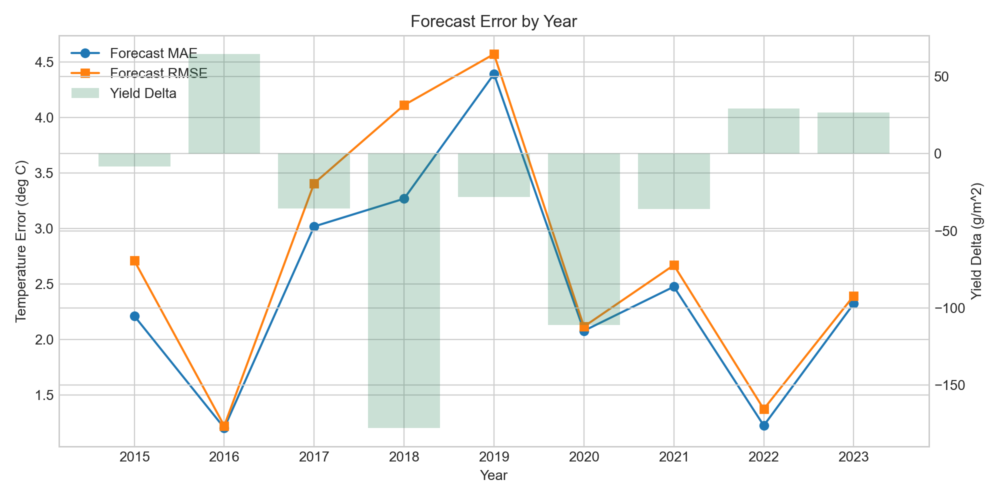
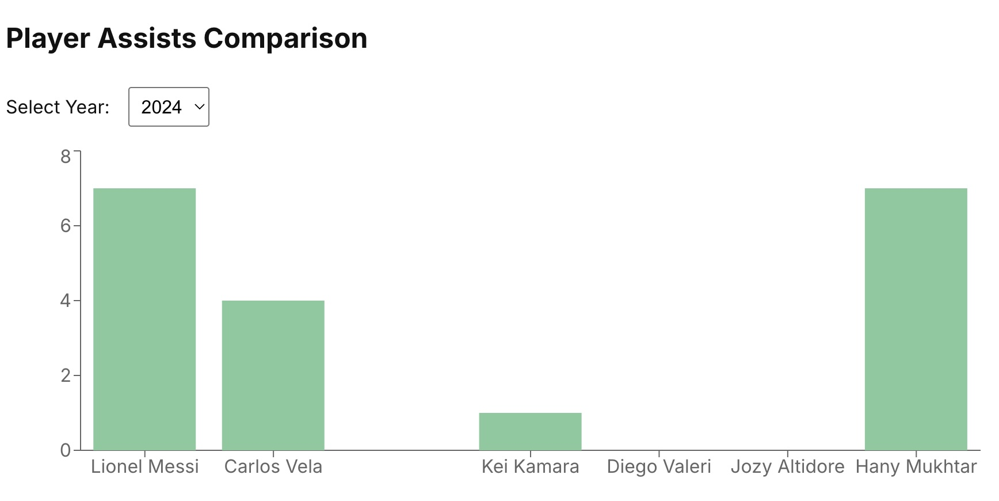
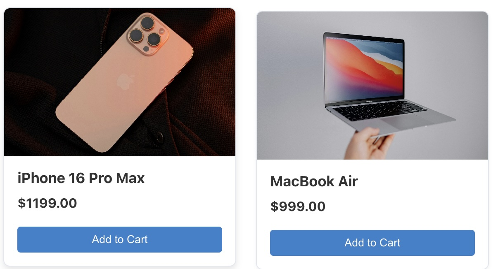

AI & Machine Learning
Supervised and unsupervised learning, CNNs, LSTMs, model evaluation, preprocessing, exploratory analysis
Open to internships and collaborations
AI Builder · Software Developer · Data Science Student
I’m John, a University of Ottawa Computer Science student focused on turning complex data and real-world problems into useful, understandable technology.
About
I’m completing an Honours Bachelor of Computer Science in the Data Science option at the University of Ottawa. My work sits at the intersection of artificial intelligence, software engineering, databases, and data analysis—with a growing focus on systems that connect models to usable products.
I enjoy moving through the full problem-solving cycle: understanding requirements, preparing data, developing and evaluating models, building interfaces, and documenting what I learn. My current honours project brings that approach together through microclimate forecasting and crop-yield analysis.
Long term, I want to create responsible, useful technology for communities and organizations in both Canada and Africa. I’m building that path honestly—one tested project, deeper technical skill, and meaningful collaboration at a time.
How I build
Define the real problem, users, constraints, and success criteria.
Study requirements, data, comparable solutions, and technical risks.
Choose a focused architecture and map the experience before building.
Develop the smallest useful prototype with clean, maintainable code.
Test behaviour, measure results, and iterate from real evidence.
Explain decisions, limitations, results, and the next opportunity.
Capabilities
I use the tools a problem requires and keep learning where the work demands more depth.
Supervised and unsupervised learning, CNNs, LSTMs, model evaluation, preprocessing, exploratory analysis
PostgreSQL, MySQL, SQLite, relational design, SQL optimization, data visualization
React, Vue, TypeScript, JavaScript, HTML, CSS, Bootstrap, responsive interfaces
Python, Java, SQL, JavaScript, TypeScript, C
Data pipelines, APIs, workflow integration, model-to-application delivery
Git, GitHub, Linux, Jupyter, VS Code, IntelliJ IDEA, Android Studio
Selected work
From machine-learning pipelines to database internals and product interfaces.

Honours project · Featured
An end-to-end research and software project connecting CNN/LSTM weather forecasts to a crop model, then measuring how short-term temperature predictions affect simulated yield outcomes.
Database systems
Implemented a symmetric hash join within PostgreSQL to explore streaming join behaviour, dual hash-table maintenance, and database execution trade-offs.
Android application
A multi-role event platform supporting administrator, organizer, and attendee workflows across registration, approval, cancellation, search, and event management.

Data visualization
An interactive dashboard for filtering and comparing Major League Soccer player performance data.
Open live dashboard
Web application
A responsive e-commerce experience focused on product discovery, clear categories, and an approachable purchase journey.
Open live applicationDirection
Active areas of learning and long-term professional direction—not finished claims.
Connecting models, data, and repeatable workflows to reduce manual work responsibly.
Turning useful model capabilities into dependable, understandable software products.
Learning how to identify valuable use cases and guide practical, low-risk adoption.
Exploring tools for agriculture, education, operations, and access across African contexts.
Current roadmap
This site is a product in progress: a credible professional foundation today, with a measured path toward useful AI capabilities.
Education
Honours Bachelor of Computer Science
Data Science option · Expected June 2027
Relevant areas of study
In progress IBM Introduction to Machine Learning — Coursera
Contact
I’m open to internships, junior opportunities, research collaborations, mentorship, and thoughtful conversations about AI, data, and software.